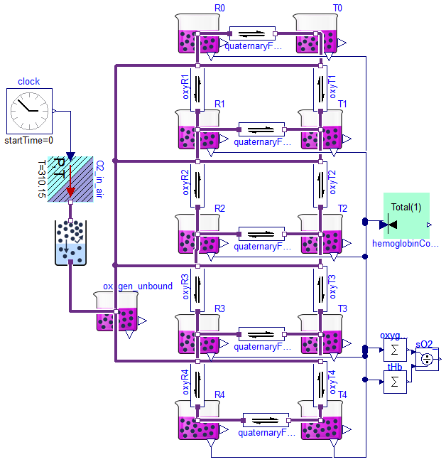
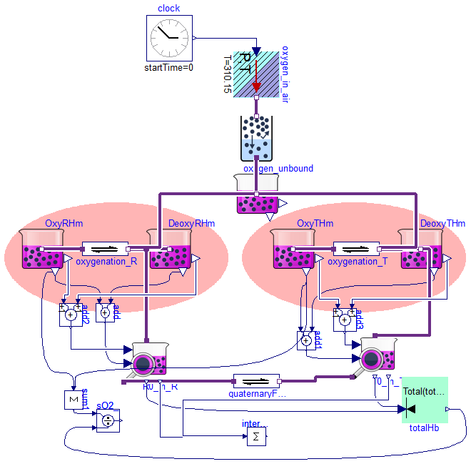
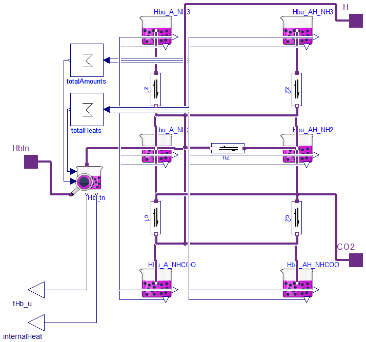
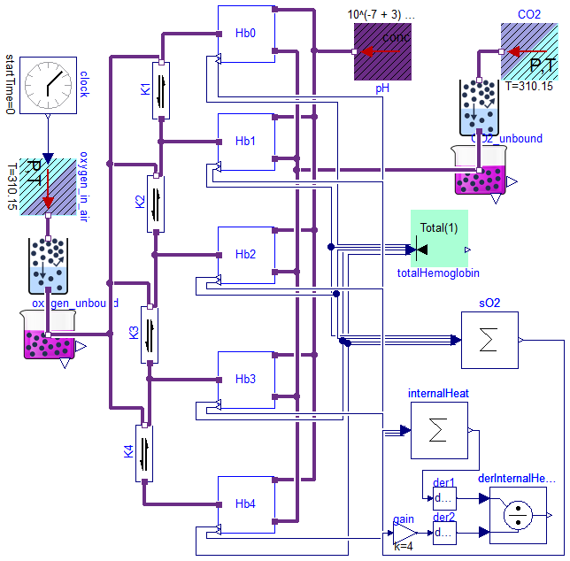

Hemoglobin blood gases binding
Package Content
Monod,Wyman,Changeux (1965)

Information
To understand the model is necessary to study the principles of MWC allosteric transitions first published by
[1] Monod,Wyman,Changeux (1965). "On the nature of allosteric transitions: a plausible model." Journal of molecular biology 12(1): 88-118.
In short it is about binding oxygen to hemoglobin.
Oxgen are driven by its partial pressure using clock source - from very little pressure to pressure of 10kPa.
(Partial pressure of oxygen in air is the air pressure multiplied by the fraction of the oxygen in air.)
Hemoglobin was observed (by Perutz) in two structuraly different forms R and T.
These forms are represented by blocks T0..T4 and R0..R4, where the suffexed index means the number of oxygen bounded to the form.
In equilibrated model can be four chemical reactions removed and the results will be the same, but dynamics will change a lot. ;)
If you remove the quaternaryForm1,quaternaryForm2,quaternaryForm3,quaternaryForm4 then the model in equilibrium will be exactly the same as in MWC article.
Parameters was fitted to data of Severinghaus article from 1979. (For example at pO2=26mmHg is oxygen saturation sO2 = 48.27 %).
Extends from Modelica.Icons.Example (Icon for runnable examples).
Parameters
| Type | Name | Default | Description |
|---|
| Temperature | T | 310.15 | Temperature [K] |
| Fraction | L | 7.0529*10^6 | =[T0]/[R0] .. dissociation constant of relaxed <-> tensed change of deoxyhemoglobin tetramer [1] |
| Fraction | c | 0.00431555 | =KR/KT .. ration between oxygen affinities of relaxed vs. tensed subunit [1] |
| Concentration | KR | 0.000671946 | oxygen dissociation on relaxed(R) hemoglobin subunit [mol/m3] |
| Concentration | KT | KR/c | oxygen dissociation on tensed(T) hemoglobin subunit [mol/m3] |
| AmountOfSubstance | totalAmountOfHemoglobin | 1 | [mol] |
Revisions
2013
Marek Matejak, Charles University, Prague, Czech Republic
Modelica definition
model Allosteric_Hemoglobin_MWC
"Monod,Wyman,Changeux (1965)"
extends Modelica.Icons.Example;
//extends SteadyStates.Interfaces.SteadyStateSystem(
// Simulation=SimulationType.SteadyState);
parameter Types.Temperature T=310.15
"Temperature";
// parameter GasSolubility alpha = Modelica.Constants.R*298.15 * 0.0105 * 1e-3
// "oxygen solubility in plasma";
// by Siggaard Andersen: 0.0105 (mmol/l)/kPa
parameter Types.Fraction L = 7.0529*10^6
"=[T0]/[R0] .. dissociation constant of relaxed <-> tensed change of deoxyhemoglobin tetramer";
parameter Types.Fraction c = 0.00431555
"=KR/KT .. ration between oxygen affinities of relaxed vs. tensed subunit";
parameter Types.Concentration KR = 0.000671946
"oxygen dissociation on relaxed(R) hemoglobin subunit";
//*7.875647668393782383419689119171e-5
//10.500001495896 7.8756465463794e-05
parameter Types.Concentration KT=KR/c
"oxygen dissociation on tensed(T) hemoglobin subunit";
// Fraction sO2 "hemoglobin oxygen saturation";
parameter Types.AmountOfSubstance totalAmountOfHemoglobin=1;
// AmountOfSubstance totalAmountOfRforms;
// AmountOfSubstance totalAmountOfTforms;
Components.Substance T0(stateName="T0",Simulation=Types.SimulationType.SteadyState,
solute_start=1);
Components.Substance T1(stateName="T1",Simulation=Types.SimulationType.SteadyState,
solute_start=0);
Components.Substance R1(stateName="R1",Simulation=Types.SimulationType.SteadyState,
solute_start=0,
isDependent=true);
Components.Substance T2(stateName="T2",Simulation=Types.SimulationType.SteadyState,
solute_start=0);
Components.Substance R2(stateName="R2",Simulation=Types.SimulationType.SteadyState,
solute_start=0);
Components.Substance T3(stateName="T3",Simulation=Types.SimulationType.SteadyState,
solute_start=0);
Components.Substance R3(stateName="R3",Simulation=Types.SimulationType.SteadyState,
solute_start=0);
Components.Substance T4(stateName="T4",Simulation=Types.SimulationType.SteadyState,
solute_start=0,
isDependent=true);
Components.Substance R4(stateName="R4",Simulation=Types.SimulationType.SteadyState,
solute_start=0);
Components.Substance R0(stateName="R0",Simulation=Types.SimulationType.SteadyState,
solute_start=0);
Components.ChemicalReaction quaternaryForm(K=L);
Components.ChemicalReaction oxyR1(nP=2, K=KR/4);
Components.ChemicalReaction oxyT1(nP=2, K=KT/4);
Components.ChemicalReaction oxyR2(nP=2, K=KR/(3/2));
Components.ChemicalReaction oxyR3(nP=2, K=KR/(2/3));
Components.ChemicalReaction oxyR4(nP=2, K=KR*4);
Components.ChemicalReaction oxyT2(nP=2, K=KT/(3/2));
Components.ChemicalReaction oxyT3(nP=2, K=KT/(2/3));
Components.ChemicalReaction oxyT4(nP=2, K=KT*4);
Components.ChemicalReaction quaternaryForm1(K=c*L);
Components.ChemicalReaction quaternaryForm2(K=(c^2)*L);
Components.ChemicalReaction quaternaryForm3(K=(c^3)*L);
Components.ChemicalReaction quaternaryForm4(K=(c^4)*L);
SteadyStates.Components.MolarConservationLaw hemoglobinConservationLaw(
n=10, Total(displayUnit="mol") = 1,
Simulation=Types.SimulationType.SteadyState);
Modelica.Blocks.Math.Sum oxygen_bound(k={1,1,2,2,3,3,4,4}, nin=8);
Modelica.Blocks.Math.Division sO2_
"hemoglobin oxygen saturation";
Modelica.Blocks.Math.Sum tHb(nin=10, k=4*
ones(10));
Components.Substance oxygen_unbound(solute_start=0.000001*
7.875647668393782383419689119171e-5, Simulation=Types.SimulationType.SteadyState);
Modelica.Blocks.Sources.Clock clock(offset=10);
Sources.UnlimitedGasStorage O2_in_air(Simulation=Types.SimulationType.SteadyState,
usePartialPressureInput=true,
T=310.15);
Components.GasSolubility gasSolubility(
useHeatPort=false,
kH_T0=0.026029047188736,
C=1700);
equation
// sO2 = (R1.solute + 2*R2.solute + 3*R3.solute + 4*R4.solute + T1.solute + 2*T2.solute + 3*T3.solute + 4*T4.solute)/(4*totalAmountOfHemoglobin);
// totalAmountOfRforms = R0.solute + R1.solute + R2.solute + R3.solute + R4.solute;
// totalAmountOfTforms = T0.solute + T1.solute + T2.solute + T3.solute + T4.solute;
// totalAmountOfHemoglobin*normalizedState[1] = totalAmountOfRforms + totalAmountOfTforms;
connect(quaternaryForm.products[1],T0. q_out);
connect(oxyR1.substrates[1],R1. q_out);
connect(R1.q_out,oxyR2. products[1]);
connect(oxyR2.substrates[1],R2. q_out);
connect(oxyR3.substrates[1],R3. q_out);
connect(oxyR3.products[1],R2. q_out);
connect(R3.q_out,oxyR4. products[1]);
connect(oxyR4.substrates[1],R4. q_out);
connect(oxyT1.products[1],T0. q_out);
connect(oxyT1.substrates[1],T1. q_out);
connect(T1.q_out,oxyT2. products[1]);
connect(oxyT2.substrates[1],T2. q_out);
connect(T2.q_out,oxyT3. products[1]);
connect(oxyT3.substrates[1],T3. q_out);
connect(T3.q_out,oxyT4. products[1]);
connect(oxyT4.substrates[1],T4. q_out);
connect(R0.q_out,quaternaryForm. substrates[1]);
connect(R0.q_out,oxyR1. products[1]);
connect(R1.q_out,quaternaryForm1. substrates[1]);
connect(quaternaryForm1.products[1],T1. q_out);
connect(R2.q_out,quaternaryForm2. substrates[1]);
connect(quaternaryForm2.products[1],T2. q_out);
connect(R3.q_out,quaternaryForm3. substrates[1]);
connect(quaternaryForm3.products[1],T3. q_out);
connect(R4.q_out,quaternaryForm4. substrates[1]);
connect(quaternaryForm4.products[1],T4. q_out);
connect(R4.solute,hemoglobinConservationLaw. fragment[1]);
connect(T4.solute,hemoglobinConservationLaw. fragment[2]);
connect(R3.solute,hemoglobinConservationLaw. fragment[3]);
connect(T3.solute,hemoglobinConservationLaw. fragment[4]);
connect(R2.solute,hemoglobinConservationLaw. fragment[5]);
connect(T2.solute,hemoglobinConservationLaw. fragment[6]);
connect(R1.solute,hemoglobinConservationLaw. fragment[7]);
connect(T1.solute,hemoglobinConservationLaw. fragment[8]);
connect(R0.solute,hemoglobinConservationLaw. fragment[9]);
connect(T0.solute,hemoglobinConservationLaw. fragment[10]);
connect(R1.solute,oxygen_bound. u[1]);
connect(T1.solute,oxygen_bound. u[2]);
connect(R2.solute,oxygen_bound. u[3]);
connect(T2.solute,oxygen_bound. u[4]);
connect(R3.solute,oxygen_bound. u[5]);
connect(T3.solute,oxygen_bound. u[6]);
connect(R4.solute,oxygen_bound. u[7]);
connect(T4.solute,oxygen_bound. u[8]);
connect(oxygen_bound.y,sO2_. u1);
connect(sO2_.u2,tHb. y);
connect(R0.solute,tHb. u[1]);
connect(T0.solute,tHb. u[2]);
connect(R1.solute,tHb. u[3]);
connect(T1.solute,tHb. u[4]);
connect(R2.solute,tHb. u[5]);
connect(T2.solute,tHb. u[6]);
connect(R3.solute,tHb. u[7]);
connect(T3.solute,tHb. u[8]);
connect(R4.solute,tHb. u[9]);
connect(T4.solute,tHb. u[10]);
connect(oxyR1.products[2],oxygen_unbound. q_out);
connect(oxyR2.products[2],oxygen_unbound. q_out);
connect(oxyR3.products[2],oxygen_unbound. q_out);
connect(oxyR4.products[2],oxygen_unbound. q_out);
connect(oxygen_unbound.q_out, oxyT1.products[2]);
connect(oxygen_unbound.q_out, oxyT2.products[2]);
connect(oxygen_unbound.q_out, oxyT3.products[2]);
connect(oxygen_unbound.q_out, oxyT4.products[2]);
connect(oxygen_unbound.q_out,gasSolubility. q_in);
connect(O2_in_air.q_out,gasSolubility. q_out);
connect(clock.y,O2_in_air. partialPressure);
end Allosteric_Hemoglobin_MWC;
Monod,Wyman,Changeux (1965) - The same allosteric hemoglobin model as Allosteric_Hemoglobin_MWC implemented by Speciation blocks

Information
Before silumation in "Dymola 2014 FD01" please chose "Euler" method!
To understand the model is necessary to study the principles of MWC allosteric transitions first published by
[1] Monod,Wyman,Changeux (1965). "On the nature of allosteric transitions: a plausible model." Journal of molecular biology 12(1): 88-118.
In short it is about binding oxygen to hemoglobin.
Oxgen are driven by its partial pressure using clock source - from very little pressure to pressure of 10kPa.
(Partial pressure of oxygen in air is the air pressure multiplied by the fraction of the oxygen in air.)
Hemoglobin was observed (by Perutz) in two structuraly different forms R and T.
These forms are represented by blocks T0..T4 and R0..R4, where the suffexed index means the number of oxygen bounded to the form.
In equilibrated model can be four chemical reactions removed and the results will be the same, but dynamics will change a lot. ;)
If you remove the quaternaryForm1,quaternaryForm2,quaternaryForm3,quaternaryForm4 then the model in equilibrium will be exactly the same as in MWC article.
Parameters was fitted to data of Severinghaus article from 1979. (For example at pO2=26mmHg is oxygen saturation sO2 = 48.27 %).
Extends from Modelica.Icons.Example (Icon for runnable examples).
Parameters
| Type | Name | Default | Description |
|---|
| MolarEnergy | dHT | 10000 | Enthalpy of heme oxygenation in T hemoglobin form [J/mol] |
| MolarEnergy | dHR | 20000 | Enthalpy of heme oxygenation in R hemoglobin form [J/mol] |
| MolarEnergy | dHL | -1000 | Enthalpy of reaction T->R as hemoglobin tetramer structure change [J/mol] |
| Fraction | L | 7.0529*10^6 | =[T0]/[R0] .. dissociation constant of relaxed <-> tensed change of deoxyhemoglobin tetramer [1] |
| Fraction | c | 0.00431555 | =KR/KT .. ration between oxygen affinities of relaxed vs. tensed subunit [1] |
| Concentration | KR | 0.000671946 | oxygen dissociation on relaxed(R) hemoglobin subunit [mol/m3] |
| Concentration | KT | KR/c | oxygen dissociation on tensed(T) hemoglobin subunit [mol/m3] |
| AmountOfSubstance | totalAmountOfHemoglobin | 1 | [mol] |
Revisions
2013
Marek Matejak, Charles University, Prague, Czech Republic
Modelica definition
model Allosteric_Hemoglobin2_MWC
"Monod,Wyman,Changeux (1965) - The same allosteric hemoglobin model as Allosteric_Hemoglobin_MWC implemented by Speciation blocks"
extends Modelica.Icons.Example;
parameter Types.MolarEnergy dHT=10000
"Enthalpy of heme oxygenation in T hemoglobin form";
parameter Types.MolarEnergy dHR=20000
"Enthalpy of heme oxygenation in R hemoglobin form";
parameter Types.MolarEnergy dHL=-1000
"Enthalpy of reaction T->R as hemoglobin tetramer structure change";
parameter Types.Fraction L = 7.0529*10^6
"=[T0]/[R0] .. dissociation constant of relaxed <-> tensed change of deoxyhemoglobin tetramer";
parameter Types.Fraction c = 0.00431555
"=KR/KT .. ration between oxygen affinities of relaxed vs. tensed subunit";
parameter Types.Concentration KR = 0.000671946
"oxygen dissociation on relaxed(R) hemoglobin subunit";
//*7.875647668393782383419689119171e-5
//10.500001495896 7.8756465463794e-05
parameter Types.Concentration KT=KR/c
"oxygen dissociation on tensed(T) hemoglobin subunit";
parameter Types.AmountOfSubstance totalAmountOfHemoglobin=1;
Chemical.Components.ChemicalReaction quaternaryForm(K=L,
TK=310.15,
dH=dHL);
Components.Speciation
R0_in_R(NumberOfSubunits=4, useInternalHeatsInput=true);
Components.Speciation
T0_in_T(NumberOfSubunits=4, useInternalHeatsInput=true);
Chemical.Components.Substance OxyRHm[4](
each Simulation=Types.SimulationType.SteadyState,
each isDependent=true,
each solute_start=4e-19,
each dH=-dHL/4 - dHR)
"Oxygenated subunit in R structure of hemoglobin tetramer";
Chemical.Components.ChemicalReaction oxygenation_R[4](
each K=KR,
each nP=2,
each TK=310.15,
each dH=dHR);
Chemical.Components.Substance DeoxyRHm[4](
each Simulation=
Types.SimulationType.SteadyState,
each solute_start=4e-11,
each dH=-dHL/4)
"Deoxygenated subunit in R structure of hemoglobin tetramer";
Chemical.Components.Substance OxyTHm[4](
each Simulation=Types.SimulationType.SteadyState,
isDependent={false,true,true,true},
each dH=-dHT,
each solute_start=1e-14)
"Oxygenated subunit in T structure of hemoglobin tetramer";
Chemical.Components.ChemicalReaction oxygenation_T[4](
each K=KT,
each nP=2,
each dH=dHT,
each TK=310.15);
Chemical.Components.Substance DeoxyTHm[4](
each Simulation=Types.SimulationType.SteadyState,
each solute_start=0.00025,
each dH=0)
"Deoxygenated subunit in T structure of hemoglobin tetramer";
Chemical.Components.Substance
oxygen_unbound(Simulation=Types.SimulationType.SteadyState, solute_start=0.000001
*7.875647668393782383419689119171e-5);
Modelica.Blocks.Sources.Clock clock(offset=10);
Modelica.Blocks.Math.Add add[4];
Modelica.Blocks.Math.Add add1[4];
Sources.UnlimitedGasStorage oxygen_in_air(
Simulation=Types.SimulationType.SteadyState,
usePartialPressureInput=true,
isIsolatedInSteadyState=false,
T=310.15);
Components.GasSolubility
partialPressure1( kH_T0(displayUnit="(mmol/l)/kPa at 25degC")=
0.026029047188736,
T=310.15,
C=1700);
SteadyStates.Components.MolarConservationLaw totalHb(
Simulation=Types.SimulationType.SteadyState,
Total(displayUnit="mol") = totalAmountOfHemoglobin,
n=2);
Modelica.Blocks.Math.Sum sum1(nin=8, k=(1/4)*
ones(8));
Modelica.Blocks.Math.Division sO2_
"hemoglobin oxygen saturation";
Modelica.Blocks.Math.Sum internalHeat(nin=2)
"hemoglobin enthalpy heat";
Modelica.Blocks.Math.Add add2[
4];
Modelica.Blocks.Math.Add add3[4];
equation
connect(R0_in_R.specificForm, quaternaryForm.substrates[1]);
connect(quaternaryForm.products[1], T0_in_T.specificForm);
connect(OxyTHm.q_out, oxygenation_T.substrates[1]);
connect(oxygenation_T.products[1], DeoxyTHm.q_out);
connect(OxyTHm.solute, add1.u2);
connect(add1.u1, DeoxyTHm.solute);
connect(partialPressure1.q_out, oxygen_in_air.q_out);
connect(partialPressure1.q_in, oxygen_unbound.q_out);
connect(clock.y, oxygen_in_air.partialPressure);
connect(add.y, R0_in_R.amountOfSubunit);
connect(OxyRHm.solute, add.u2);
connect(DeoxyRHm.solute, add.u1);
connect(OxyRHm.q_out, oxygenation_R.substrates[1]);
connect(DeoxyRHm.q_out, R0_in_R.specificSubunitForm);
connect(oxygenation_R.products[1], DeoxyRHm.q_out);
connect(oxygenation_R[1].products[2], oxygen_unbound.q_out);
connect(oxygenation_R[2].products[2], oxygen_unbound.q_out);
connect(oxygenation_R[3].products[2], oxygen_unbound.q_out);
connect(oxygenation_R[4].products[2], oxygen_unbound.q_out);
connect(oxygenation_T[1].products[2], oxygen_unbound.q_out);
connect(oxygenation_T[2].products[2], oxygen_unbound.q_out);
connect(oxygenation_T[3].products[2], oxygen_unbound.q_out);
connect(oxygenation_T[4].products[2], oxygen_unbound.q_out);
connect(T0_in_T.specificSubunitForm, DeoxyTHm.q_out);
connect(add1.y, T0_in_T.amountOfSubunit);
connect(R0_in_R.amount, totalHb.fragment[1]);
connect(T0_in_T.amount, totalHb.fragment[2]);
connect(OxyRHm.solute, sum1.u[1:4]);
connect(OxyTHm.solute, sum1.u[5:8]);
connect(sO2_.u1, sum1.y);
connect(totalHb.totalAmountOfSubstance, sO2_.u2);
connect(R0_in_R.internalHeat, internalHeat.u[1]);
connect(T0_in_T.internalHeat, internalHeat.u[2]);
connect(add3.y, T0_in_T.subunitInternalHeat);
connect(add2.y, R0_in_R.subunitInternalHeat);
connect(add3.u1, DeoxyTHm.internalHeat);
connect(OxyTHm.internalHeat, add3.u2);
connect(OxyRHm.internalHeat, add2.u2);
connect(DeoxyRHm.internalHeat, add2.u1);
end Allosteric_Hemoglobin2_MWC;
Part of model Hemoglobin_MKM_Adair

Information
Ref: Mateják Marek, Kulhánek Tomáa, Matouaek Stanislav. Adair-Based Hemoglobin Equilibrium with Oxygen, Carbon Dioxide and Hydrogen Ion Activity. Scandinavian Journal of Clinical & Laboratory Investigation 2014
Parameters are chosen to fit following measurements:
[1] Bauer C, Schröder E. Carbamino compounds of haemoglobin in human adult and foetal blood. The Journal of physiology 1972;227:457-71.
[2] Siggaard-Andersen O. Oxygen-Linked Hydrogen Ion Binding of Human Hemoglobin. Effects of Carbon Dioxide and 2, 3-Diphosphoglycerate I. Studies on Erythrolysate. Scandinavian Journal of Clinical & Laboratory Investigation 1971;27:351-60.
Parameters
| Type | Name | Default | Description |
|---|
| Boolean | loadStarts | | Start values of state variables from data file (to help with initialization) |
| Boolean | storeState | | Save state variables at the end of simulation |
| Real | pKz[4] | | Dissociation coefficient of reaction z (Val1 amino terminal protonation) |
| Real | pKc[4] | | Dissociation coefficient of reaction c (Val1 amino terminal carbamination) |
| Real | pKh[4] | | Dissociation coefficient of reaction h (other Bohr protonation reactions of side chains) |
| MolarEnergy | dH_HbuANH2[4] | | Standard enthalpy of deprotonated and decarboxylated hemoglobin subunit [J/mol] |
| MolarEnergy | dHz[4] | | Enthalpy of reaction z (Val1 amino terminal protonation) [J/mol] |
| MolarEnergy | dHc[4] | | Enthalpy of reaction c (Val1 amino terminal carbamination) [J/mol] |
| MolarEnergy | dHh[4] | | Enthalpy of reaction h (other Bohr protonation reactions of side chains) [J/mol] |
| Boolean | isDependent | false | contains dependent equation (if solver is not smart enough) |
Connectors
Revisions
2014
Marek Matejak, Charles University, Prague, Czech Republic
Modelica definition
model Hemoglobin_MKM_Specie
"Part of model Hemoglobin_MKM_Adair"
parameter Boolean loadStarts
"Start values of state variables from data file (to help with initialization)";
parameter Boolean storeState
"Save state variables at the end of simulation";
constant String dirName =
Modelica.Utilities.Files.loadResource("modelica://Physiolibrary/Resources/Data/Hemoglobin_MKM")
"Directory to load start gues values and store final simulation values";
parameter Real[4] pKz
"Dissociation coefficient of reaction z (Val1 amino terminal protonation)";
parameter Real[4] pKc
"Dissociation coefficient of reaction c (Val1 amino terminal carbamination)";
parameter Real[4] pKh
"Dissociation coefficient of reaction h (other Bohr protonation reactions of side chains)";
parameter Types.MolarEnergy[4] dH_HbuANH2
"Standard enthalpy of deprotonated and decarboxylated hemoglobin subunit";
parameter Types.MolarEnergy[4] dHz
"Enthalpy of reaction z (Val1 amino terminal protonation)";
parameter Types.MolarEnergy[4] dHc
"Enthalpy of reaction c (Val1 amino terminal carbamination)";
parameter Types.MolarEnergy[4] dHh
"Enthalpy of reaction h (other Bohr protonation reactions of side chains)";
parameter Boolean isDependent=false
"contains dependent equation (if solver is not smart enough)";
Chemical.Interfaces.ChemicalPort_a Hbtn;
Chemical.Components.Substance Hbu_A_NH3[4](
each Simulation=
Types.SimulationType.SteadyState,
dH=dH_HbuANH2 - dHz,
each dirName = dirName,
each LOAD_STARTS=loadStarts,
each SAVE_RESULTS=storeState,
each solute_start=1e-06);
Chemical.Components.Substance Hbu_AH_NH3[4](
each Simulation=
Types.SimulationType.SteadyState,
each dirName = dirName,
each LOAD_STARTS=loadStarts,
each SAVE_RESULTS=storeState,
each solute_start=1e-06,
dH=dH_HbuANH2 - dHh - dHz);
Chemical.Components.Substance Hbu_A_NH2[4](
each Simulation=
Types.SimulationType.SteadyState,
isDependent={isDependent,true,true,true},
each dirName = dirName,
each LOAD_STARTS=loadStarts,
each SAVE_RESULTS=storeState,
each solute_start=1e-06,
dH=dH_HbuANH2);
Chemical.Components.Substance Hbu_AH_NH2[4](
each Simulation=
Types.SimulationType.SteadyState,
each dirName = dirName,
each LOAD_STARTS=loadStarts,
each SAVE_RESULTS=storeState,
each solute_start=1e-06,
dH=dH_HbuANH2 - dHh);
Chemical.Components.Substance Hbu_A_NHCOO[4](
each Simulation=
Types.SimulationType.SteadyState,
dH=dH_HbuANH2 + dHc,
each dirName = dirName,
each LOAD_STARTS=loadStarts,
each SAVE_RESULTS=storeState,
each solute_start=1e-06);
Chemical.Components.Substance Hbu_AH_NHCOO[4](
each Simulation=
Types.SimulationType.SteadyState,
each dirName = dirName,
each LOAD_STARTS=loadStarts,
each SAVE_RESULTS=storeState,
dH=dH_HbuANH2 + dHc,
each solute_start=1e-06);
Chemical.Components.ChemicalReaction h2[4](
each nS=1,
each nP=2,
K=
fill(10, 4) .^ (-pKh .+ 3),
each TK=310.15,
dH=dHh);
Chemical.Components.ChemicalReaction z1[4](
each nP=2, K=
fill(10, 4)
.^ (-pKz .+ 3),
dH=dHz,
each TK=310.15);
Chemical.Components.ChemicalReaction z2[4](
each nP=2, K=
fill(10, 4)
.^ (-pKz .+ 3),
each TK=310.15,
dH=dHz);
Chemical.Components.ChemicalReaction c1[4](
each nS=2,
each nP=2,
K=
fill(10, 4) .^ (-pKc .+ 3),
each TK=310.15,
dH=dHc);
Chemical.Components.ChemicalReaction c2[4](
each nS=2,
each nP=2,
K=
fill(10, 4) .^ (-pKc .+ 3),
each TK=310.15,
dH=dHc);
Modelica.Blocks.Math.Sum total[4](
each nin=6);
Chemical.Interfaces.ChemicalPort_a H(conc(nominal=10^(-7.2+3)))
"hydrogen ions";
Chemical.Interfaces.ChemicalPort_a CO2;
Chemical.Components.Speciation Hb_tn(Simulation=Types.SimulationType.SteadyState,
NumberOfSubunits=4,
useInternalHeatsInput=true);
Types.RealIO.AmountOfSubstanceOutput tHb_u;
Types.RealIO.EnergyOutput internalHeat
"internal heat";
Modelica.Blocks.Math.Sum total1[
4](
each nin=6);
equation
connect(Hbu_AH_NH3.q_out, z2.substrates[1]);
connect(Hbu_A_NH3.q_out, z1.substrates[1]);
connect(z1.products[1], Hbu_A_NH2.q_out);
connect(z2.products[1], Hbu_AH_NH2.q_out);
connect(h2.substrates[1], Hbu_AH_NH2.q_out);
connect(Hbu_A_NH2.q_out, c1.substrates[1]);
connect(Hbu_AH_NH2.q_out, c2.substrates[1]);
connect(c1.products[1], Hbu_A_NHCOO.q_out);
connect(c2.products[1], Hbu_AH_NHCOO.q_out);
connect(Hbu_A_NH3.solute, total.u[1]);
connect(Hbu_AH_NH3.solute, total.u[2]);
connect(Hbu_A_NH2.solute, total.u[3]);
connect(Hbu_AH_NH2.solute, total.u[4]);
connect(Hbu_A_NHCOO.solute, total.u[5]);
connect(Hbu_AH_NHCOO.solute, total.u[6]);
connect(Hbu_A_NH2.q_out, h2.products[1]);
connect(Hb_tn.specificForm, Hbtn);
connect(total.y, Hb_tn.amountOfSubunit);
for i
in 1:4
loop
connect(z1[i].products[2], H);
connect(z2[i].products[2], H);
connect(c1[i].products[2], H);
connect(c2[i].products[2], H);
connect(H, h2[i].products[2]);
connect(CO2, c2[i].substrates[2]);
connect(CO2, c1[i].substrates[2]);
end for;
connect(Hb_tn.specificSubunitForm, Hbu_A_NH2.q_out);
connect(tHb_u, Hb_tn.amount);
connect(Hb_tn.internalHeat, internalHeat);
connect(Hbu_A_NH3.internalHeat, total1.u[1]);
connect(Hbu_AH_NH3.internalHeat, total1.u[2]);
connect(Hbu_A_NH2.internalHeat, total1.u[3]);
connect(Hbu_AH_NH2.internalHeat, total1.u[4]);
connect(Hbu_A_NHCOO.internalHeat, total1.u[5]);
connect(Hbu_AH_NHCOO.internalHeat, total1.u[6]);
connect(total1.y, Hb_tn.subunitInternalHeat);
end Hemoglobin_MKM_Specie;
Matejak,Kulhanek,Matousek (2014)

Information
Ref: Mateják Marek, Kulhánek Tomáa, Matouaek Stanislav. Adair-Based Hemoglobin Equilibrium with Oxygen, Carbon Dioxide and Hydrogen Ion Activity. Scandinavian Journal of Clinical & Laboratory Investigation 2014
Before silumation in "Dymola 2014 FD01" please set environment variable "Advanced.Define.NonLinearIterations = 3" and chose "Euler" method!
Parameters are chosen to fit following measurements:
[1] Bauer C, Schröder E. Carbamino compounds of haemoglobin in human adult and foetal blood. The Journal of physiology 1972;227:457-71.
[2] Siggaard-Andersen O. Oxygen-Linked Hydrogen Ion Binding of Human Hemoglobin. Effects of Carbon Dioxide and 2, 3-Diphosphoglycerate I. Studies on Erythrolysate. Scandinavian Journal of Clinical & Laboratory Investigation 1971;27:351-60.
[3] Severinghaus JW. Simple, accurate equations for human blood O2 dissociation computations. Journal of Applied Physiology 1979;46:599-602.
Extends from Modelica.Icons.Example (Icon for runnable examples).
Parameters
| Type | Name | Default | Description |
|---|
| Boolean | storeResults | false | |
| Boolean | loadStarts | true | |
Revisions
2014
Marek Matejak, Charles University, Prague, Czech Republic
Modelica definition
model Hemoglobin_MKM_Adair
"Matejak,Kulhanek,Matousek (2014)"
extends Modelica.Icons.Example;
constant Real pKzD=7.73,pKcD=7.54,pKhD=7.52;
constant Real pKzO=7.25,pKcO=8.35,pKhO=6.89;
constant Types.MolarEnergy dHzD=-51400, dHzO=7700, dHcD=59100, dHcO=-41100, dHhD=49000, dHhO=-105000, dHo=50000, dH_HbuDANH2=0;
// dHhD=0, dHhO=-104000, dHo=12700, dH_HbuDANH2=0; // dHhD=48600, dHhO=-104000, dHo=50000, dH_HbuDANH2=0;
parameter Boolean storeResults=false;
parameter Boolean loadStarts=true;
Chemical.Components.ChemicalReaction K1(
K=0.0121,
nS=1,
nP=2);
Chemical.Components.ChemicalReaction K2(
K=0.0117,
nS=1,
nP=2);
Chemical.Components.ChemicalReaction K3(
K=0.0871,
nS=1,
nP=2);
Chemical.Components.ChemicalReaction K4(
K=0.000386,
nS=1,
nP=2);
Chemical.Examples.Hemoglobin.Hemoglobin_MKM_Specie Hb0(
pKz=
fill(pKzD, 4),
pKc=
fill(pKcD, 4),
pKh=
fill(pKhD, 4),
isDependent=true,
dH_HbuANH2(displayUnit="kJ/mol") =
fill(dH_HbuDANH2, 4),
dHz(displayUnit="kJ/mol") =
fill(dHzD, 4),
dHc(displayUnit="kJ/mol") =
fill(dHcD, 4),
dHh(displayUnit="kJ/mol") =
fill(dHhD, 4),
storeState=storeResults,
loadStarts=loadStarts);
Chemical.Examples.Hemoglobin.Hemoglobin_MKM_Specie Hb1(
pKz=
cat( 1,
fill(pKzD, 3),
fill(pKzO, 1)),
pKc=
cat( 1,
fill(pKcD, 3),
fill(pKcO, 1)),
pKh=
cat( 1,
fill(pKhD, 3),
fill(pKhO, 1)),
dH_HbuANH2(displayUnit="kJ/mol") =
cat( 1,
fill(dH_HbuDANH2, 3),
fill(dH_HbuDANH2-dHo, 1)),
dHz(displayUnit="kJ/mol") =
cat( 1,
fill(dHzD, 3),
fill(dHzO, 1)),
dHc(displayUnit="kJ/mol") =
cat( 1,
fill(dHcD, 3),
fill(dHcO, 1)),
dHh(displayUnit="kJ/mol") =
cat( 1,
fill(dHhD, 3),
fill(dHhO, 1)),
storeState=storeResults,
loadStarts=loadStarts);
Chemical.Examples.Hemoglobin.Hemoglobin_MKM_Specie Hb2(
pKz=
cat( 1,
fill(pKzD, 2),
fill(pKzO, 2)),
pKc=
cat( 1,
fill(pKcD, 2),
fill(pKcO, 2)),
pKh=
cat( 1,
fill(pKhD, 2),
fill(pKhO, 2)),
dH_HbuANH2(displayUnit="kJ/mol") =
cat( 1,
fill(dH_HbuDANH2, 2),
fill(dH_HbuDANH2-dHo, 2)),
dHz(displayUnit="kJ/mol") =
cat( 1,
fill(dHzD, 2),
fill(dHzO, 2)),
dHc(displayUnit="kJ/mol") =
cat( 1,
fill(dHcD, 2),
fill(dHcO, 2)),
dHh(displayUnit="kJ/mol") =
cat( 1,
fill(dHhD, 2),
fill(dHhO, 2)),
storeState=storeResults,
loadStarts=loadStarts);
Chemical.Examples.Hemoglobin.Hemoglobin_MKM_Specie Hb3(
pKz=
cat( 1,
fill(pKzD, 1),
fill(pKzO, 3)),
pKc=
cat( 1,
fill(pKcD, 1),
fill(pKcO, 3)),
pKh=
cat( 1,
fill(pKhD, 1),
fill(pKhO, 3)),
dH_HbuANH2(displayUnit="kJ/mol") =
cat( 1,
fill(dH_HbuDANH2, 1),
fill(dH_HbuDANH2-dHo, 3)),
dHz(displayUnit="kJ/mol") =
cat( 1,
fill(dHzD, 1),
fill(dHzO, 3)),
dHc(displayUnit="kJ/mol") =
cat( 1,
fill(dHcD, 1),
fill(dHcO, 3)),
dHh(displayUnit="kJ/mol") =
cat( 1,
fill(dHhD, 1),
fill(dHhO, 3)),
storeState=storeResults,
loadStarts=loadStarts);
Chemical.Examples.Hemoglobin.Hemoglobin_MKM_Specie Hb4(
pKz=
fill(pKzO, 4),
pKc=
fill(pKcO, 4),
pKh=
fill(pKhO, 4),
dH_HbuANH2(displayUnit="kJ/mol") =
fill(dH_HbuDANH2-dHo, 4),
dHz(displayUnit="kJ/mol") =
fill(dHzO, 4),
dHc(displayUnit="kJ/mol") =
fill(dHcO, 4),
dHh(displayUnit="kJ/mol") =
fill(dHhO, 4),
storeState=storeResults,
loadStarts=loadStarts);
Chemical.Sources.UnlimitedGasStorage CO2(
Simulation=Types.SimulationType.SteadyState,
isIsolatedInSteadyState=false,
PartialPressure=0);
Chemical.Sources.UnlimitedSolutionStorage pH(
Simulation=Types.SimulationType.SteadyState,
isIsolatedInSteadyState=false,
Conc(displayUnit="mol/l") = 10^(-7 + 3));
SteadyStates.Components.MolarConservationLaw totalHemoglobin(
n=5,
Total(displayUnit="mol") = 1,
Simulation=Types.SimulationType.SteadyState);
Modelica.Blocks.Math.Sum sO2(nin=4, k={4/4,3/4,2/4,1/4});
Chemical.Components.Substance oxygen_unbound( Simulation=
Types.SimulationType.SteadyState, solute_start=1e-08);
Modelica.Blocks.Sources.Clock clock(offset=10);
Chemical.Sources.UnlimitedGasStorage oxygen_in_air(
Simulation=Types.SimulationType.SteadyState,
isIsolatedInSteadyState=false,
PartialPressure(displayUnit="Pa") = 10,
usePartialPressureInput=true,
T=310.15);
Chemical.Components.GasSolubility partialPressure1(
kH_T0(displayUnit="(mmol/l)/kPa at 25degC") = 0.026029047188736,
C=1700,
T=310.15);
Modelica.Blocks.Math.Sum internalHeat(nin=5);
Modelica.Blocks.Math.Gain gain(k=4);
Modelica.Blocks.Continuous.Der der1;
Modelica.Blocks.Continuous.Der der2;
Modelica.Blocks.Math.Division derInternalHeat_per_derO2;
Chemical.Components.GasSolubility partialPressure2(
T=310.15,
kH_T0(displayUnit="(mmol/l)/kPa at 25degC") = 0.60734443440384,
C=2400);
Chemical.Components.Substance CO2_unbound(Simulation=
Types.SimulationType.SteadyState, solute_start=
0.0012);
equation
connect(oxygen_unbound.q_out, K2.products[1]);
connect(oxygen_unbound.q_out, K3.products[1]);
connect(K1.products[1], oxygen_unbound.q_out);
connect(oxygen_unbound.q_out, K4.products[1]);
connect(CO2_unbound.q_out, Hb0.CO2);
connect(Hb0.H, pH.q_out);
connect(Hb1.H, Hb0.H);
connect(Hb3.H, Hb0.H);
connect(Hb4.H, Hb0.H);
connect(Hb2.H, Hb0.H);
connect(Hb1.CO2, Hb0.CO2);
connect(Hb2.CO2, Hb0.CO2);
connect(Hb3.CO2, Hb0.CO2);
connect(Hb4.CO2, Hb0.CO2);
connect(Hb0.Hbtn, K1.products[2]);
connect(Hb1.Hbtn, K1.substrates[1]);
connect(Hb1.Hbtn, K2.products[2]);
connect(Hb2.Hbtn, K2.substrates[1]);
connect(Hb2.Hbtn, K3.products[2]);
connect(Hb3.Hbtn, K3.substrates[1]);
connect(Hb3.Hbtn, K4.products[2]);
connect(Hb4.Hbtn, K4.substrates[1]);
connect(Hb4.tHb_u, totalHemoglobin.fragment[1]);
connect(Hb3.tHb_u, totalHemoglobin.fragment[2]);
connect(Hb2.tHb_u, totalHemoglobin.fragment[3]);
connect(Hb1.tHb_u, totalHemoglobin.fragment[4]);
connect(Hb0.tHb_u, totalHemoglobin.fragment[5]);
connect(Hb1.tHb_u, sO2.u[4]);
connect(Hb2.tHb_u, sO2.u[3]);
connect(Hb3.tHb_u, sO2.u[2]);
connect(Hb4.tHb_u, sO2.u[1]);
connect(partialPressure1.q_out,oxygen_in_air. q_out);
connect(partialPressure1.q_in,oxygen_unbound. q_out);
connect(Hb0.internalHeat, internalHeat.u[1]);
connect(Hb1.internalHeat, internalHeat.u[2]);
connect(Hb2.internalHeat, internalHeat.u[3]);
connect(Hb3.internalHeat, internalHeat.u[4]);
connect(Hb4.internalHeat, internalHeat.u[5]);
connect(gain.u, sO2.y);
connect(internalHeat.y, der1.u);
connect(gain.y, der2.u);
connect(clock.y, oxygen_in_air.partialPressure);
connect(derInternalHeat_per_derO2.u2, der2.y);
connect(derInternalHeat_per_derO2.u1, der1.y);
connect(CO2_unbound.q_out, partialPressure2.q_in);
connect(CO2.q_out, partialPressure2.q_out);
end Hemoglobin_MKM_Adair;
Automatically generated Sun Dec 07 18:20:20 2014.
 Physiolibrary.Chemical.Examples.Hemoglobin.Allosteric_Hemoglobin_MWC
Physiolibrary.Chemical.Examples.Hemoglobin.Allosteric_Hemoglobin_MWC Physiolibrary.Chemical.Examples.Hemoglobin.Hemoglobin_MKM_Specie
Physiolibrary.Chemical.Examples.Hemoglobin.Hemoglobin_MKM_Specie Physiolibrary.Chemical.Examples.Hemoglobin.Hemoglobin_MKM_Adair
Physiolibrary.Chemical.Examples.Hemoglobin.Hemoglobin_MKM_Adair